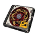
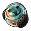
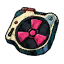
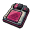
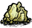
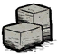
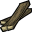
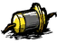

02 / CHARACTER PROFILE公共 · 界面
角色资料
点击屏幕右上方的头像按钮，打开角色资料页。页面分为基础、技能、装备三个页签，默认显示基础页。
基础与技能
基础页显示属性；技能页展示角色技能与状态。星见雅的肖像随衣装切换。
装备与驱动盘
装备页可预览六个盘位。点击盘位或“驱动盘装配”进入装配页；词条汇总位于装配和拆解页。
返回按钮或 Esc 在装配界面先返回装备预览，再次返回关闭资料页。
饥荒联机版 · 公共模组
为所有玩家提供共用物品与系统。
公共模组可独立启用，星见雅角色模组需要同时启用它。
储蓄电量、电量、三种高阶异体刃、邦邦大背包和高阶抗蚀器目前仅有物品展示、库存与存档功能，尚未加入对应装备机制。
点击屏幕右上方的头像按钮，打开角色资料页。页面分为基础、技能、装备三个页签，默认显示基础页。
基础页显示属性；技能页展示角色技能与状态。星见雅的肖像随衣装切换。
装备页可预览六个盘位。点击盘位或“驱动盘装配”进入装配页；词条汇总位于装配和拆解页。
返回按钮或 Esc 在装配界面先返回装备预览，再次返回关闭资料页。
三套驱动盘，共用六个盘位与基础词条。
在角色资料的装备页装配驱动盘。

套装按各自件数生效；总暴击率上限 100%。折枝剑歌不足四件或死亡时，四件套增益消失。以星见雅为例，折枝剑歌两件套使基础总暴击伤害由 150% 提升至 166%。
驱动盘分为 B、A、S 三级；相同套装的不同品级可混搭。1、2、3 号盘分别增加生命、理智、饱食上限；按 B / A / S 品级分别增加 20 / 30 / 50。4～6 号盘各从对应词条池随机获得一条主词条。
| 盘位与主词条 | S / A / B |
|---|---|
| 4～6：攻击、防御、生命、理智、饱食 | 30% / 20% / 10% |
| 4：暴击率 | 24% / 16% / 8% |
| 4：暴击伤害 | 48% / 32% / 16% |
| 4：异常精通 | 92 / 60 / 32 |
| 5：穿透率 | 24% / 16% / 8% |
| 5：风、冰、火、电、物理、以太伤害 | 30% / 20% / 10% |
| 6：冲击力 | 18% / 12% / 6% |
| 6：异常掌控 | 30% / 20% / 10% |
| 6：能量自动回复 | 60% / 40% / 20% |
4～6 号主词条各自按品级使用表中数值；异常精通及 5、6 号专属词条目前仅保存与显示，尚未生效。
每张盘有四条随机副词条，同盘不重复，普通词条数值随品级变化；同名主词条与副词条不会同时出现。词条生成后随物品保存，装卸和读档不会重抽。
| 副词条 | S 级数值 |
|---|---|
| 生命 / 理智 / 饱食 | 各 +3% |
| 攻击力 / 移动速度 | +3% / +1% |
| 暴击率 / 暴击伤害 | +2.4% / +4.8% |
| 位面伤害 / 位面防御 | +1 / +3 |
| 防御力 / 异常精通 | +4.8% / +9 |
多数副词条以 S 级为基准，A 级为 S 的 2/3，B 级为 S 的 1/3；实际计算保留小数。移动速度和位面伤害各品级固定为 +1% 和 +1，稳固等级也不随品级缩放。异常精通目前仅保存与显示；防御力提供额外减伤，与护甲减伤相乘。
稳固分为 1～3 级，多件只取最高级。1、2 级将击飞转为击退，硬直分别为 11、9 帧；3 级在生命高于上限 50% 时，将击飞或击退转为普通受击，生命不足时不生效。
盘位从左上开始逆时针排列：左上 1、左中 2、左下 3、右下 4、右中 5、右上 6。装配页默认选择 1 号位，并优先选中已装备的盘；选择持有的驱动盘并点击“装配所选”，它会装入自己的固定盘位；每个盘位只能装一个。
选中驱动盘后可在中栏查看词条；折枝剑歌可查看曲目介绍。点击盘位可筛选，选择“全部”可取消筛选；列表每页最多 12 格，仅显示自己持有和已装配的驱动盘。卸下或替换时物品返回物品栏，请预留空间。
在装配页选择驱动盘并点击“调律”，可指定更换一条词条：4～6 号主词条消耗 1 个调律校音器，任意盘位的副词条消耗 1 个谐振核心仪。不能选择重复或相同词条；稳固等级随机为 1～3。

谐振核心仪 ×1人物 / 精炼分类 · 无额外材料由玩家击败符合条件的巨兽时，有 25% 概率额外掉落一个调律材料，两种等概率；树精守卫和蜘蛛女王不掉落。
由玩家造成最终击败时，具有巨兽标签的敌人通常掉落一张随机套装、随机盘位的 A 级驱动盘；鹿角鹅、蚁狮、龙蝇、熊獾和独眼巨鹿各有 50% 概率将其替换为 S 级。树精守卫与蜘蛛女王有 50% 概率掉落一张 B 级。每次符合条件的击败最多掉落一张，盘位随机。
星见雅身体槽装备霰落星殿时，装配盘中央播放约 6 秒动画，每次开页播放一次，末帧停留；筛选不重播，卸装时隐藏。
驱动盘按钮和独立背包面板的位置分别在本机记忆。页面支持返回按钮、Esc 和手柄取消；打开时接管操作，但不暂停联机世界。
两种材料同时用于妖刀与霰落星殿升级，均由 DST-ZZZ 提供，所有角色可在科学机器解锁制作，最多堆叠 40 个。

zzz_anomaly_component
zzz_engine_module
硝石 ×2+金块 ×2科学机器 · 所有角色可制作 · 每次制作 1 个zzz_recordshop制作母盘和驱动盘。
使用炼金引擎解锁。距音像店 4 世界单位内，左键打开制作栏，右键拆解驱动盘。

石砖 ×5+
木板 ×5+
电子元件 ×5炼金引擎 · 所有角色可制作| 品级 | 母盘 | 制作材料 |
|---|---|---|
| B | 音质增强母盘 | 石头 ×2 + 金块 ×2 |
| A | 降噪处理母盘 | 金块 ×2 + 月亮碎片 ×2 |
| S | 高保真母盘 | 纯粹恐惧 ×2 + 纯粹辉煌 ×2 |
| 操作 | 材料 / 返还 | 说明 |
|---|---|---|
| 随机盘位 | 同品级母盘 ×3 | 获得 1 个随机盘位驱动盘 |
| 指定盘位 | 同品级母盘 ×6 | 获得 1 个所选盘位驱动盘 |
| 拆解驱动盘 | 返还同品级母盘 ×1 | 选择未装配的盘并确认拆解 |
| 母盘升阶 | 同品级母盘 ×5 | B 升 A，A 升 S；S 无法继续升阶 |
已装配的驱动盘需先卸下再拆解。材料不足、空间不足或距离不符时不消耗材料。
基础、进阶与特化冰结芯片可在精炼分类转换：3 个基础合成 1 个进阶，3 个进阶合成 1 个特化；每次分解返还 3 个低一级芯片。
zzz_crate收纳附近的物品。
关箱时收集附近物品；关闭状态下，夜晚转白天时再收集一次。打开、烧毁或拆除时不收集，箱满或无法完全合堆时余物留在地上。
关箱后按物品内部名称排序，不主动拆分或合并堆叠。所有角色可用；锤拆掉出内容物和 2 个木板。
zzz_bangboo_nest邦布装配工作站。
靠近 4 世界单位内可使用工作站。当前尚无邦布实体和可制作配方。
锤拆返还每种材料各 2 个。